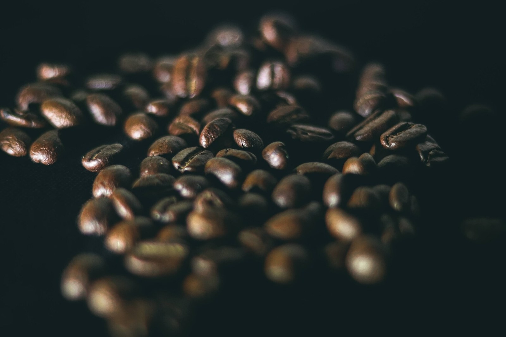
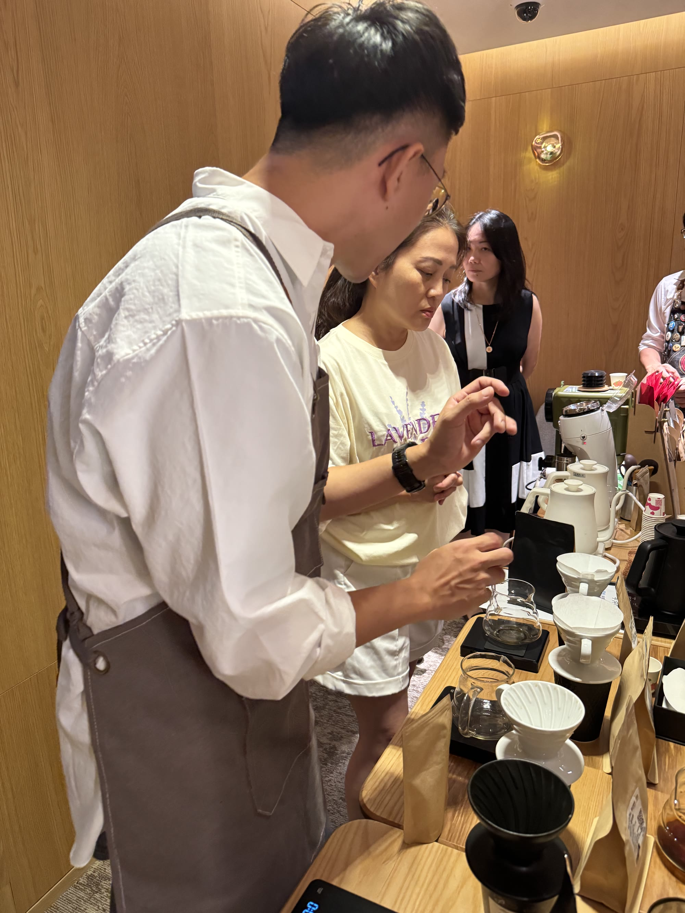

從豆源開始把關。
與信用良好的豆源廠商合作，認真挑選每一批生豆，從起點就用心。
從信用良好的豆源廠商開始，露露親自挑選、自家烘焙。
挑掉瑕疵豆子，保留乾淨健康的咖啡。
層層把關，把烘給自己家人喝的品質帶給你。

挑除瑕疵，自家烘焙。喝得安心，喝完放心。
與信用良好的豆源廠商合作，認真挑選每一批生豆，從起點就用心。
挑掉不想留下的瑕疵豆，保留乾淨的好豆，讓咖啡本身的風味好好呈現。
從選豆、挑豆到自己烘焙，層層把關，把我們願意烘給家人喝的品質帶給你。
挑一款喜歡的味道
LINE 告訴我們豆款與包數
確認金額、優惠與交付方式

照片縮圖與版面裁切；未使用 AI 生成或修改。熟豆外觀圖為共用攝影參考，並非本期商品實拍。產地照片只作區域與咖啡生產場景參考，不作為本批豆的莊園溯源。